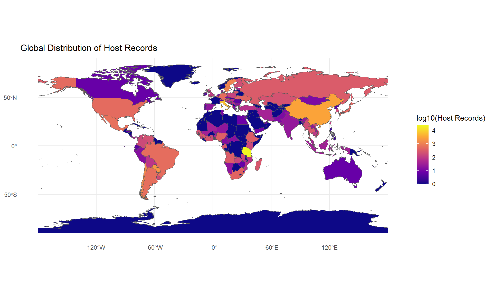
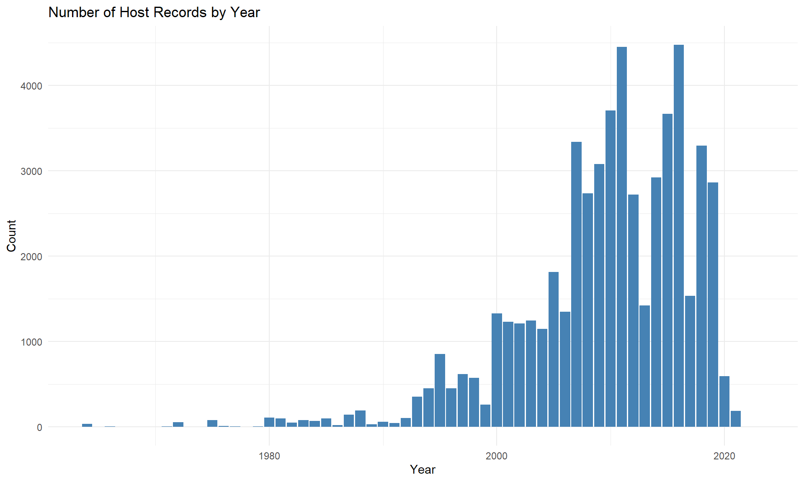
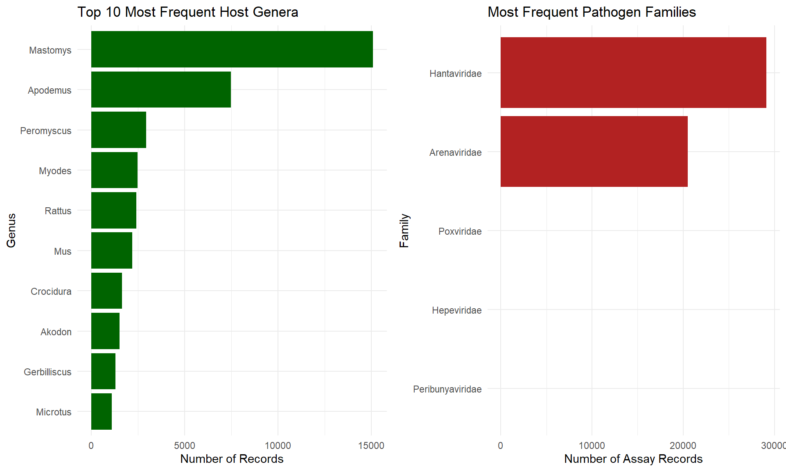

This report provides a systematic quality assurance and consistency check of the final cleaned datasets from the Project ArHa data pipeline. All checks are performed on the output of the 05_02_enrich_sequence_data.R script.
Code
# Load the final cleaned data objectcombined_data <-read_rds(here("data", "data_cleaning", "05_02_output.rds"))# Extract data frames for easier accesshost_data <- combined_data$hostpathogen_data <- combined_data$pathogensequence_data <- combined_data$sequence
1. High-Level Summary
A top-level overview of the final dataset’s dimensions and scope.
Host Records: 55,793
Pathogen Assay Records: 70,112
Sequence Records: 8,659
Geographic Scope: 117 countries
Temporal Scope: 1964-01-01 to 2208-12-31
2. Missing Data (NA) Proportions
This section identifies the proportion of missing values (NA) in key columns for each table. High proportions may indicate systematic issues in the raw data or opportunities for imputation.
Code
# Function to calculate and format NA proportionssummarise_na <-function(df, df_name) { df %>%summarise(across(everything(), ~sum(is.na(.)) /n())) %>% tidyr::pivot_longer(everything(), names_to ="Column", values_to ="NA_Proportion") %>%filter(NA_Proportion >0) %>%arrange(desc(NA_Proportion)) %>%mutate(Table = df_name)}na_summary <-bind_rows(summarise_na(host_data, "Host"),summarise_na(pathogen_data, "Pathogen"),summarise_na(sequence_data, "Sequence"))kable(na_summary, digits =3, caption ="Proportion of Missing Values in Columns with NAs")
Proportion of Missing Values in Columns with NAs
Column
NA_Proportion
Table
dist_from_expected
0.990
Host
trap_effort_resolution_clean
0.474
Host
trap_effort_resolution_raw
0.468
Host
trap_nights_clean
0.461
Host
trap_effort_raw
0.461
Host
verbatimLocality_raw
0.414
Host
adm3_id
0.354
Host
adm3_name
0.349
Host
adm2_id
0.097
Host
adm2_name
0.094
Host
resolved_species
0.066
Host
locality_raw
0.043
Host
individual_count
0.032
Host
adm1_id
0.030
Host
adm1_name
0.029
Host
adm_level_num
0.027
Host
event_date_raw
0.012
Host
start_date
0.012
Host
resolved_genus
0.003
Host
resolved_family
0.003
Host
NAME_0
0.003
Host
iso3_code_processed
0.003
Host
GID_0
0.003
Host
coordinate_resolution_raw
0.002
Host
decimalLatitude
0.002
Host
decimalLongitude
0.002
Host
resolved_order
0.000
Host
resolved_class
0.000
Host
gbif_id
0.000
Host
country_raw
0.000
Host
country_processed
0.000
Host
number_inconclusive
0.978
Pathogen
note
0.943
Pathogen
ncbi_species_name
0.367
Pathogen
ncbi_genus
0.352
Pathogen
pathogen_name_clean
0.303
Pathogen
ncbi_id
0.303
Pathogen
family_clean
0.292
Pathogen
pathogen_name_raw
0.287
Pathogen
number_negative
0.066
Pathogen
positive_tested
0.066
Pathogen
number_positive
0.066
Pathogen
tested_detected
0.016
Pathogen
number_tested
0.009
Pathogen
assay_raw
0.002
Pathogen
family
0.001
Pathogen
ncbi_gene_name
0.731
Sequence
ncbi_locality
0.519
Sequence
pathogen_species_clean
0.469
Sequence
ncbi_isolate
0.463
Sequence
ncbi_pathogen
0.306
Sequence
ncbi_collection_date
0.245
Sequence
host_species_clean
0.076
Sequence
ncbi_country_raw
0.073
Sequence
ncbi_country_clean
0.073
Sequence
ncbi_iso3
0.073
Sequence
ncbi_host
0.065
Sequence
ncbi_protein_name
0.056
Sequence
ncbi_accession_primary
0.028
Sequence
ncbi_accession_version
0.028
Sequence
ncbi_seq_length
0.028
Sequence
ncbi_strandedness
0.028
Sequence
ncbi_molecule_type
0.028
Sequence
ncbi_definition
0.028
Sequence
ncbi_create_date
0.028
Sequence
ncbi_update_date
0.028
Sequence
pathogen_species_raw
0.025
Sequence
flag_pathogen_mismatch
0.025
Sequence
associated_rodent_record_id
0.014
Sequence
associated_pathogen_record_id
0.011
Sequence
ncbi_resolved_status
0.001
Sequence
sequence_type
0.000
Sequence
3. Summaries of Flagged Data
This section reviews the status of records that were flagged during the cleaning process.
Coordinate Quality Status
Summary of the validation status for geographic coordinates in the host table.
Summary of how many accession numbers from the raw data were successfully found and enriched via the NCBI API.
Code
sequence_data %>%count(ncbi_resolved_status, sort =TRUE) %>%kable(caption ="Sequence Record Resolution Status")
Sequence Record Resolution Status
ncbi_resolved_status
n
resolved
8419
unresolved
231
NA
9
Taxonomic Mismatches
Summary of sequence records where the host species name reported in NCBI metadata differs from the cleaned host data.
Code
sequence_data %>%count(flag_host_mismatch, name ="Host Mismatch Count") %>%kable(caption ="Host Taxonomy Mismatch Flag Summary")
Host Taxonomy Mismatch Flag Summary
flag_host_mismatch
Host Mismatch Count
FALSE
6975
TRUE
1684
4. Cross-Table Consistency Checks
These checks verify that data is logical and consistent between the cleaned tables.
Date Consistency: Host vs. Sequence
This check identifies sequence records where the ncbi_collection_date falls outside the start_date and end_date range of the associated host record.
Code
date_check_df <- sequence_data %>%filter(!is.na(ncbi_collection_date)) %>%select(associated_rodent_record_id, ncbi_collection_date) %>%left_join(select(host_data, rodent_record_id, start_date, end_date),by =c("associated_rodent_record_id"="rodent_record_id") ) %>%filter(!is.na(start_date) &!is.na(end_date)) %>%mutate(host_interval =interval(start_date, end_date),date_is_consistent = ncbi_collection_date %within% host_interval )date_inconsistencies <- date_check_df %>%filter(!date_is_consistent)kable(count(date_check_df, date_is_consistent), caption ="Consistency of NCBI Collection Date with Host Record Date Range")
Consistency of NCBI Collection Date with Host Record Date Range
date_is_consistent
n
FALSE
909
TRUE
5023
Code
if (nrow(date_inconsistencies) >0) { knitr::kable(head(date_inconsistencies), caption ="Examples of Inconsistent Dates" )}
Examples of Inconsistent Dates
associated_rodent_record_id
ncbi_collection_date
start_date
end_date
host_interval
date_is_consistent
david_1336
2013-08-01
2013-07-01
2013-07-31
2013-07-01 UTC–2013-07-31 UTC
FALSE
david_1336
2013-08-01
2013-07-01
2013-07-31
2013-07-01 UTC–2013-07-31 UTC
FALSE
david_4355
2018-01-01
2016-01-01
2016-12-31
2016-01-01 UTC–2016-12-31 UTC
FALSE
david_4364
2018-01-01
2017-01-01
2017-12-31
2017-01-01 UTC–2017-12-31 UTC
FALSE
david_4364
2018-01-01
2017-01-01
2017-12-31
2017-01-01 UTC–2017-12-31 UTC
FALSE
david_4364
2018-01-01
2017-01-01
2017-12-31
2017-01-01 UTC–2017-12-31 UTC
FALSE
5. Data Distributions
High-level visualizations of the geographic, temporal, and taxonomic distributions in the dataset.
Geographic Distribution of Host Records
Code
# Load a world mapworld <- rnaturalearth::ne_countries(scale ="medium", returnclass ="sf")# Summarise points by countrycountry_summary <- host_data %>%filter(!is.na(country_processed)) %>%count(country_processed, GID_0)world_summary <- world %>%left_join(country_summary, by =c("iso_a3"="GID_0")) %>%mutate(n =if_else(is.na(n), 0L, n))# Plot the mapggplot(data = world_summary) +geom_sf(aes(fill =log10(n +1))) +scale_fill_viridis_c(option ="plasma", name ="log10(Host Records)") +theme_minimal() +labs(title ="Global Distribution of Host Records")

Temporal Distribution of Host Records
Code
host_data %>%filter(!is.na(start_date)) %>%mutate(year =year(start_date)) %>%ggplot(aes(x = year)) +geom_bar(fill ="steelblue") +theme_minimal() +labs(title ="Number of Host Records by Year", x ="Year", y ="Count")

Top Host and Pathogen Taxa
Code
# Top 10 Host Generap1 <- host_data %>%count(resolved_genus, sort =TRUE) %>%filter(!is.na(resolved_genus)) %>%slice_head(n =10) %>%ggplot(aes(x =reorder(resolved_genus, n), y = n)) +geom_col(fill ="darkgreen") +coord_flip() +theme_minimal() +labs(title ="Top 10 Most Frequent Host Genera", x ="Genus", y ="Number of Records")# Top Pathogen Familiesp2 <- pathogen_data %>%count(family_clean, sort =TRUE) %>%filter(!is.na(family_clean)) %>%ggplot(aes(x =reorder(family_clean, n), y = n)) +geom_col(fill ="firebrick") +coord_flip() +theme_minimal() +labs(title ="Most Frequent Pathogen Families", x ="Family", y ="Number of Assay Records")gridExtra::grid.arrange(p1, p2, ncol =2)

6. QA Summary
This report provides a snapshot of the cleaned Project ArHa database. Key takeaways are:
The dataset is comprehensive, with 55,793 host records from 118 countries.
Data linkage appears strong, with very few (231) unresolved sequence accessions.
Action Item: The 909 identified date inconsistencies between host and sequence tables should be manually reviewed.